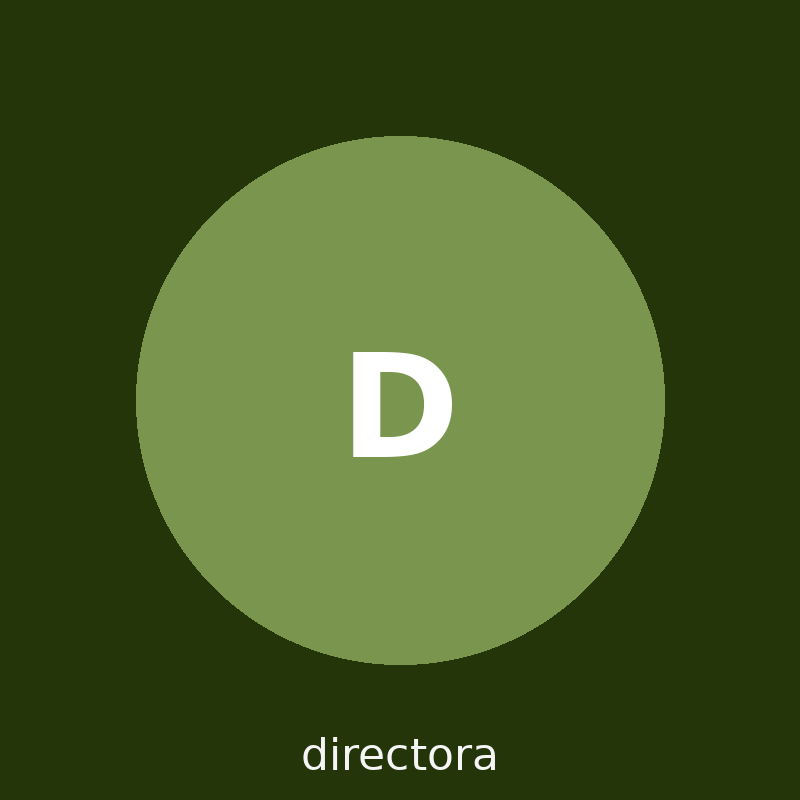

📁 Mapa - Sectores del Liceo
1. Dirección
Concepto: Tríada C-I-D (explicada)
Pendiente
2. Sala de Informática
Concepto: Equipos compartidos
Pendiente
3. Identidad Digital
Concepto: Contraseñas + Doble verificación (MFA)
Pendiente
4. Correo del Liceo
Concepto: Phishing (engaño por mail)
Pendiente
5. Dispositivos Personales
Concepto: IoT (Internet de las Cosas)
Pendiente
6. Caso final
Concepto: Enlaces acortados + documentos compartidos
Pendiente
TERMINAL
Protocolo de Finalización
Bloqueado
1. Dirección: proteger la información (Tríada C‑I‑D)

Informe de la Dra. Vega
Concepto de la misión: Tríada C‑I‑D
Confidencialidad: que solo vea la info quien corresponde. Integridad: que la info no se cambie sin permiso. Disponibilidad: que el sistema funcione cuando lo necesitás.
En Dirección detectaron accesos raros al registro de estudiantes y calificaciones. Antes de culpar a alguien, necesitamos entender qué se dañó: ¿se filtró información?, ¿se modificó?, ¿o el sistema se cayó?
ASIGNACIÓN C‑I‑D (EN COSAS DEL LICEO)
Selecciona el principio de la tríada (Confidencialidad, Integridad, Disponibilidad) que se compromete más en cada caso:
2. Sala de Informática: equipos compartidos

Informe de Kai Byte
Concepto de la misión: equipos compartidos
En el liceo hay máquinas de préstamo y PCs del laboratorio. En estos casos, el riesgo no es “hacking de película”: suele ser dejar una sesión abierta (quedás logueado) o guardar contraseñas en el navegador. Eso permite que otra persona entre a tu CREA o Gmail sin saber tu clave.
En el laboratorio aparecieron cuentas abiertas y cambios raros en trabajos. No necesitamos acusar por “cara”: necesitamos mirar conductas. Vas a analizar 3 situaciones reales y decidir cuáles son prácticas seguras y cuáles ponen en riesgo al liceo.
PRÁCTICAS EN RIESGO (LO QUE SÍ PASA EN UN LICEO)
Clasificá cada caso según el nivel de riesgo: Bajo (bien), Medio (dudoso) o Alto (peligroso). Cada error resta puntos. Cuando termines, vas a elegir un sospechoso (no por “malo”, sino por sus hábitos).
Elige a tu Sospechoso Principal
Clasifica a los tres agentes arriba para habilitar la selección.
3. Identidad Digital: contraseñas + doble verificación

Informe de la Dra. Cipher
Concepto de la misión: MFA (doble verificación)
MFA significa Autenticación Multifactor. En criollo: además de tu contraseña, te piden otra prueba (por ejemplo un código en el celular). Sirve porque si alguien roba tu clave, igual no entra fácil.
Detectamos intentos de entrar con contraseñas probadas “una atrás de otra” (pasa cuando se filtran claves viejas). Para entender cómo defenderte, vas a explorar una “habitación oscura” del sistema y encontrar un código de 4 cifras. Pista: pensá en buenas prácticas de contraseñas (largas, únicas) y en activar doble verificación cuando esté disponible.
4. Correo del Liceo: detectar phishing

Informe del Agente Phish
Concepto de la misión: phishing
Phishing es un engaño: alguien se hace pasar por una persona real (por ejemplo Dirección) para que hagas clic o entregues datos. Suele usar urgencia (“es ahora o perdés algo”), y un enlace que parece normal pero no lo es.
Hoy llegó un correo “de la Directora” con su foto de perfil. Pide datos de un responsable para “descargar el boletín” desde un enlace. Tu trabajo es detectar señales sospechosas y decidir qué harías.

Hola,
Necesitamos ya los datos de un responsable (nombre, CI y teléfono) para habilitar la descarga del boletín.
Si no se completa hoy, el sistema bloquea la entrega.
👉 Descargar boletín: https://bit.ly/boletin-liceo
— Dirección
Chequeo rápido (opción múltiple)
Respondé y al final se te muestra la clave de la misión.
1) ¿Qué señal es la más sospechosa?
2) ¿Por qué un enlace acortado (tipo bit.ly) puede ser riesgoso?
3) ¿Qué harías primero?
4) ¿Qué emoción están usando para apurarte?
5. Dispositivos personales: riesgos IoT

Informe del Ing. Nodea
Concepto de la misión: IoT
IoT significa Internet de las Cosas: objetos “comunes” conectados (smartwatch, auriculares, cámaras, TV). El riesgo es que juntan datos, se conectan a redes y a veces quedan con configuraciones inseguras o sin actualizar.
En el liceo no solo hay PCs: también entran celulares y smartwatch. Si un dispositivo se conecta a la Wi‑Fi, al Bluetooth o a apps con permisos de más, puede exponer información (ubicación, contactos) o abrir puertas a cuentas del liceo si se sincroniza con el correo. Tu misión es reconocer riesgos típicos y elegir la mejor medida.
Riesgos comunes (opción múltiple)
Elegí la mejor respuesta. Cada error resta puntos.
6. Caso final: enlace acortado + documento mal compartido
Informe del Equipo de Soporte
Conceptos del caso
Enlace acortado: tapa la dirección real. Puede usarse para engañar. WPS es una suite de documentos (como Word/Docs). El riesgo está en cómo se comparte: “cualquiera con el enlace puede editar” = problema.
Llegó un Gmail al curso con un enlace acortado para “ver un documento del boletín”. Al abrirlo, aparece un documento WPS compartido con permisos raros. Tu tarea es decidir qué señales son peligrosas y cuál sería la reacción correcta para proteger al liceo.
Buen día. Para agilizar, dejo el enlace al documento:
https://tinyurl.com/boletin-2026
(Responder solo si hay problemas.)
Permisos actuales: “Cualquiera con el enlace”
Acceso: Puede editar
Esto permite que cualquiera cambie el contenido (por ejemplo, borrar nombres, cambiar calificaciones, etc.).
Decisiones clave (opción múltiple)
Respondé todo para obtener la clave final.
1) ¿Qué combinación es la más peligrosa?
2) ¿Qué harías con el documento?
3) ¿Cómo verificarías si el mail es real?
Puntuación final: 0